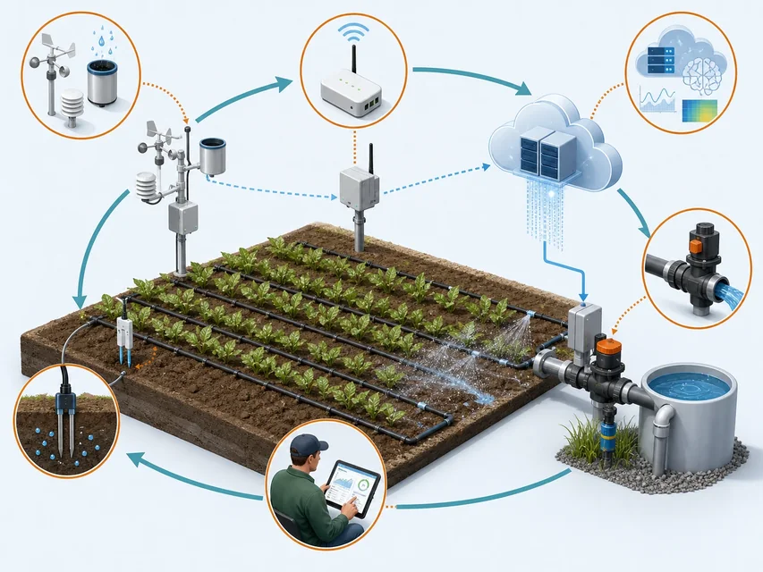

技术驱动
芯片更小、计算更普及、通信覆盖更广
感知、连接和处理可以嵌入更多设备
让土壤、车辆等对象的状态进入系统，再让处理结果返回现场任务
 VER. 2608
Built with impress.js
VER. 2608
Built with impress.js
用对象、连接、数据、反馈和服务证据判断系统是否属于物联网
农田要知道哪块地缺水，工厂要在设备停机前发现异常
芯片更小、计算更普及、通信覆盖更广
感知、连接和处理可以嵌入更多设备
行业需要重设计流程、减少浪费、提高效率和改善服务
现场状态成为数字化决策的依据
测什么、在哪里处理、传给谁，要由灌溉、设备维护等任务决定
技术条件（并列）：集成电路、微电子机械系统 MEMS、计算、通信 任务要求：农田按地块灌溉、工厂减少意外停机 设备动作：测量状态、处理数据、发送结果
让设备体积、功耗和成本更适合嵌入物体
让高性能处理与低成本控制同时走向现场
让信息通过有线、无线和移动网络跨越距离传输
指定要观察的对象、要采集的数据，以及谁根据结果采取行动
| 现象 | 请先判断归类 | 请写能力或目标 |
|---|---|---|
| 低功耗芯片进入传感器 | 技术条件／应用需求 | 填写能力／目标 |
| 农田需要按地块灌溉 | 技术条件／应用需求 | 填写能力／目标 |
| 移动网络覆盖扩大 | 技术条件／应用需求 | 填写能力／目标 |
| 工厂希望减少停机 | 技术条件／应用需求 | 填写能力／目标 |
技术让连接成为可能，需求决定连接是否有价值
这四类技术先后交叉发展，不能排成一条唯一的发明顺序
已有技术：网络／标识／感知与执行／系统协同 组合任务：认出对象、读取状态、传送数据、决定并执行
互联网、移动通信和机器到机器 M2M
条码、射频识别 RFID 和可解析的对象身份
传感器、传感器网络和执行器
泛在计算、工业 4.0 和物理信息系统
每一步都回答一个具体问题：是谁、怎样了、数据去哪、接着做什么
01
02
03
04接入与标识
→ 状态感知
→ 数据处理
→ 决策与反馈各环节可交叉，不表示历史先后或固定实现顺序
| 动作 | 请写主要线索（可多选） | 请写关键证据 |
|---|---|---|
| 读取包装上的编号 | 填写线索 | 填写证据 |
| 测量土壤湿度 | 填写线索 | 填写证据 |
| 把数据送到平台 | 填写线索 | 填写证据 |
| 按阈值打开阀门 | 填写线索 | 填写证据 |
只读到编号还不知道对象状态，只测到湿度也不能把结果送到平台或打开阀门
一块地既有位置、湿度和作物等现场状态，也有系统中的编号和数据记录
观测链：物理实体 → 感知、标识与连接 → 信息处理 反馈链：决策或服务 → 作用于对象或现实任务
设备、车辆、建筑、环境或其他可识别、可感知或可作用的对象
让系统知道数据对应哪个对象或事件
让不同设备、网络和平台能够交换信息
分析结果交给人员或执行器，用于改变灌溉、维护等现场任务
对象、数据、决策和执行组成一个闭环
系统采集状态、传输数据、分析数据并形成决策
云端或边缘可以承担处理
传感器读取环境，执行器改变设备或过程
结果再被测量，形成下一轮状态
云端或边缘计算可承担处理，但不是物联网的必要组成
| 系统描述 | 请标出已有环节 | 还需追问什么 |
|---|---|---|
| 传感器把温度上传到平台 | 填写已有环节 | 填写追问 |
| 平台显示车辆位置 | 填写已有环节 | 填写追问 |
| 阀门按平台命令打开 | 填写已有环节 | 填写追问 |
| 数据表保存历史记录 | 填写已有环节 | 填写追问 |
先找已有环节，再追问缺失的对象、决策或反馈
判断时要分别找对象、接入规模、自动决策、跨系统协作和实际结果
物可以发起上报，也可以成为观测或作用对象：传感器上报，土壤被测，阀门执行
相关物在行业、区域或场景中成规模接入
系统根据湿度数据决定是否灌溉，并减少人工逐块检查
传感、网络、平台和农务系统交换数据与指令，共同完成灌溉
让人少巡田、及时灌溉，并用用水量和作物状态检查结果
五项特征分别对应对象、覆盖、决策、协同和服务结果
智能灌溉任务链为五项特征提供可观察证据
土壤、作物和阀门进入系统
传感器采集状态，系统据此决策
阀门改变灌溉，结果再次被测量
图示是局部闭环；泛在看规模接入，高阶看系统协同，智能不等于人工智能 AI

同一条任务链为五项特征提供不同证据
| 特征 | 系统中的表现 | 观察证据 |
|---|---|---|
| 物源 | 土壤、阀门和作物进入系统 | 对象有状态或作用点 |
| 泛在 | 多个地块和设备成规模接入 | 不是单台孤立设备 |
| 智能 | 系统根据数据调整灌溉 | 决策减少人工参与 |
| 高阶 | 传感、网络、平台与农务系统协同完成农务目标 | 数据和指令跨系统流转 |
| 服务 | 按作物需要灌溉并节水 | 用水量和作物状态达到目标 |
判断特征要看对象、规模、决策、协同和服务结果
| 判断 | 请指出不足证据 | 请写需要补充的证据 |
|---|---|---|
| 有很多设备所以很智能 | 填写不足证据 | 填写补充证据 |
| 设备联网所以是物联网 | 填写不足证据 | 填写补充证据 |
| 平台能分析所以有服务 | 填写不足证据 | 填写补充证据 |
| 多系统接入所以是高阶 | 填写不足证据 | 填写补充证据 |
每项特征都要有运行证据，不能靠宣传语替代
还要检查数据是否可靠、动作是否改善目标，以及误报、故障或泄露由谁处理
| 场景 | 可能改善 | 同时要检查 |
|---|---|---|
| 农业与环境 | 按地块灌溉、减少用水、提前发现异常 | 传感器是否准确、坏了谁维修、调节是否伤害作物 |
| 工业制造 | 提前维护设备、减少意外停机 | 谁能停机、错误指令怎样撤回、事故由谁处置 |
| 交通与城市 | 调整流量、定位车辆、调度资源 | 谁能看位置、断网怎样运行、紧急时谁接管 |
| 家居与健康 | 按个人需要控制设备、连续记录状态 | 谁能看数据、误报怎样确认、何时必须由人判断 |
传感器会损坏，账号可能被盗，位置和健康数据也会泄露；方案要写明维护、停机和处置人
从现实对象到服务结果，每一步都可能成为瓶颈
01
02
03
04
05对象与状态
→ 标识与感知
→ 网络与计算
→ 数据与决策
→ 执行或服务反馈判断方案要问：测谁、产生什么数据、谁决定、怎样作用回现场、出错由谁处置
| 方案描述 | 请标出已有证据 | 请写仍需补充的证据 |
|---|---|---|
| 设备持续上传数据 | 填写已有证据 | 填写缺口 |
| 平台自动报警 | 填写已有证据 | 填写缺口 |
| 设备自动调节能耗 | 填写已有证据 | 填写缺口 |
| 多部门共享平台 | 填写已有证据 | 填写缺口 |
方案要写清希望改善什么，以及误报、断网、设备失控或数据泄露时怎样处理
不看前页结论，从现实需求出发重建对象、信息、反馈和服务证据